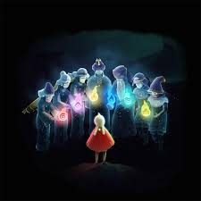
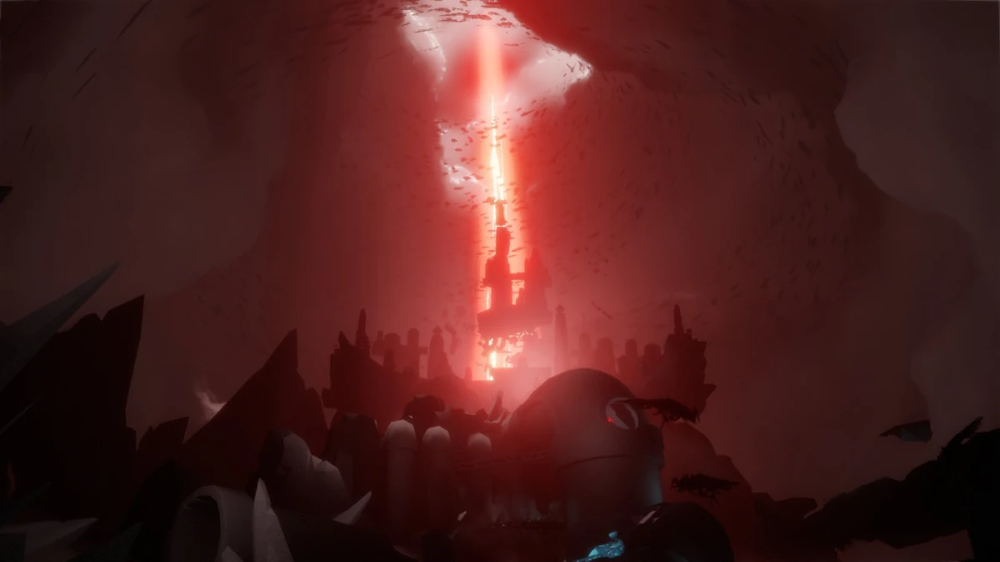
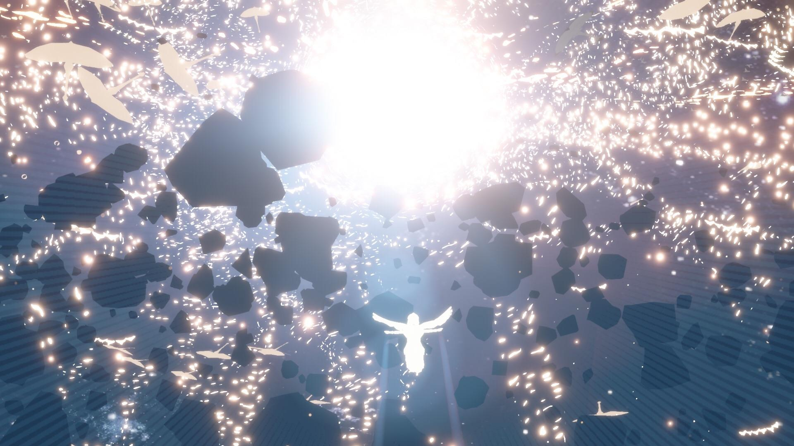

Sky: The Children of Light: Diving into the world of Sky's story, visuals and sound.
Sky: Children of the Light released in 2019, is a peaceful and award-winning MMO from the creators of Journey.
Transported into a beautifully-animated kingdom your avatar explores the seven realms and create enriching memories
with other players in this delightful puzzle-adventure game.
Hello my name is Isreyale and I created this website to analyze the story, audio and visual aspects of my favorite game Sky: The Children of Light.
I came across this game in highschool, and it was something I could turn to when I needed to a safe space. I cannot wait to show you what Sky offers.
Theres alot to cover, so hold on tight ;).
The Story
Gameplay and What's at Stake in Sky: Children of the Light
Sky: Children of the Light is an open-world social adventure where players, as "Children of Light," explore seven realms to restore fallen stars.
Gameplay involves flying, solving puzzles, and collaborating with others to spread light and uncover a lost civilization’s secrets. The stakes are high:
players must revive the celestial order and combat darkness threatening the world. The game emphasizes kindness, connection, and teamwork to preserve the
light and beauty of the kingdom.

Narrative Arc of the Game
The story begins with Children of Light awakening to restore fallen stars and revive a forgotten kingdom. Each realm reveals memories of its downfall,
caused by neglect and imbalance. Guided by spirits, players explore themes of hope, unity, and redemption. As darkness looms, the journey intensifies,
culminating in a final realm where players face immense challenges. The narrative highlights selflessness, the resilience of light, and the beauty of connection,
weaving an emotional, reflective experience.
How the Game Ends

The ending takes place in the Eye of Eden, a dangerous realm where players face overwhelming darkness.
To restore the fallen stars, they must sacrifice their light, symbolizing ultimate selflessness. This act reignites the constellations, healing the sky and renewing the world.
Players are reborn, greeted by the restored beauty of their efforts. The bittersweet conclusion reinforces themes of renewal and connection. Post-ending, players can continue exploring and spreading light,
keeping the adventure alive.
Audio
The audio design is an essential part of its immersive and emotional experience.
The music, composed by Vincent Diamante, blends orchestral and ambient elements to evoke feelings of wonder, joy, and introspection.
Each realm features unique compositions that reflect its mood, from tranquil melodies in peaceful areas to intense crescendos during dramatic moments.
The dynamic score adapts seamlessly to gameplay, reinforcing themes of exploration and connection.
Environmental sound design further enhances immersion, with lifelike ambient noises like rustling leaves, flowing water, and distant winds. Interactive elements,
such as the hum of candles or echoes in caverns, add tactile feedback and guide players through the world. Social interactions are enriched by harmonious chimes and musical instruments,
fostering communication and community without words. Spatial audio creates a sense of presence, helping players locate companions or navigate hazards. Thematically, the audio aligns with the game’s focus on light,
hope, and unity, supporting both narrative and visuals. Technically, the sound design is optimized across platforms, ensuring high fidelity and accessibility for all players.
Together, these elements make Sky’s audio a masterful blend of artistry and functionality, elevating the game to a deeply engaging and memorable experience.
Visuals
The visuals are breathtaking, characterized by a dreamlike, ethereal aesthetic.
The game’s world is a stunning blend of expansive skies, glowing landscapes, and intricately designed realms, each representing a different stage of life.
Soft lighting, dynamic weather effects, and vibrant colors create an atmosphere of wonder and serenity. The character designs are minimalist yet expressive,
with flowing capes and glowing features that emphasize light and movement. Fluid animations enhance the sense of flight and exploration, while detailed environments
invite players to immerse themselves in the beauty of the game’s celestial and earthly landscapes.